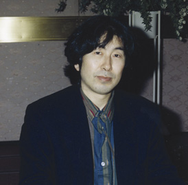

歌川正国画伯のプロフィール
|
|||||
ロシア連邦国立芸術アカデミー名誉正会員 ラトビア共和国国立芸術アカデミー名誉博士 ウクライナ国立芸術アカデミー名誉教授 スペイン王立薬学アカデミー会員 アルメニア共和国国立科学アカデミー会員他 薬学、芸術、哲学、科学、物理学、経済学、文学等、各方面において世界のアカデミー会員、博士、教授。フランス国家勲章の芸術文化勲章シュバリエを始め、数多くの賞、勲章、爵位等を受賞。
|
 | ||||
|
|||||
|
20歳の時に単身、北欧に渡る。北欧の環境問題意識の高さにカルチャーショックを受け、日本に戻り芸術村作りをめざして、1974年ウイッピー（WIPPII）総合研究所を富士山麓に設立。ところが、富士五湖の湖水の汚染、富士山五合目のゴミの埋め立てなど環境汚染が進んでいる為、空缶公害と題して空缶やタバコのポイ捨てなどの全国的な社会運動を展開。大量の消費使い捨てブームや野山や海（夢の島など）に安易にゴミの埋め立て処理していた社会風潮を変える為、消費者と行政、企業に自然保護とリサイクル、省エネ、省資源問題の意識を普及させた。 1975年、科学小説「七次元よりの使者」を出版し、ベストセラーとなる。又、民間で初めて電波望遠鏡を作り、それにより採取した宇宙からの電波をシンセサイザーで変換、更に16音階の曲を加え、日本で初めてコンピューターシステムを導入した音楽をフィリップスレコード会社から発表し、音楽界に影響を与える。 編集長として、雑誌「ふる里村情報」等を1982年創刊。それまでの“都会から地方へ”という一方的な情報や文化の流れを、“地方から都会へ”という新しい流れを生み出す。農薬汚染問題を告発し、無農薬、無添加食品の自給、自足体制をつくり、普及活動を行う。またブローカーの談合慣習であった土地家屋の競売を一般公開して借金に苦しむ債権者を救済すると同時に、都会の人々に地方や過疎地の家や土地が安く持てる夢を与えた。 １９世紀の西欧において日本文化とヨーロッパ文化を繋ぐ総合芸術の一つとして、江戸期最大の浮世絵師集団であった「歌川派」の浮世絵が果たした大きな役割を再認識し、日本文化の真髄を復活する事を目的とした「歌川派門人会」を1990年8月に結成し、初代会長となる。 医学面においてはガンやエイズ、糖尿病や心臓病、高脂血症等に画期的効果がある自然薬のＧＯＰ（五井野プロシジャー）を発明、発見。 |
|||||
|
芸術活動の足跡1990年8月 １９世紀の西欧において日本文化とヨーロッパ文化を繋ぐ総合芸術の一つとして、江戸期最大の浮世絵師集団であった「歌川派」の浮世絵が果たした大きな役割を再認識し、日本文化の真髄を復活する事を目的とした「歌川派門人会」を結成し、初代会長となる。 1992年7月 銀座のシンワアートミュージアムにて「ゴッホと歌川派展」開催。代表作「鏡の中のホッホ」を発表。 1993年から1994年にかけ、長野の信州博、福岡県田川市立美術館、宮崎県都城市立美術館にて「日本を愛したゴッホを偲ぶ歌川派浮世絵展」、宮崎県立美術館にて「200年の伝統を誇る歌川派門人展」を開催。 1994年6月 デンマークのコペンハーゲンにて浮世絵展「impressions」を開催。 同年7月、アルメニア共和国にて「ゴッホと歌川正国展、及び歌川派絵画展」開催。 アルメニア正教より平和賞を受賞。 同年9月 アメリカのアラバマ州バーミンハム市立美術館にて「ゴッホの浮世絵と歌川正国特別展」開催。アラバマ州立大学にて「環境と文化」について講演。 同年12月 全国横断、北方四島地震災害支援チャリティー講演会「広重東海道と写楽」を開催。 1995年2月 ノルウェーのオスロ市立ステーネルセン美術館で浮世絵展 同年7月 ロシア国立プーシキン美術館にて「ゴッホが愛した浮世絵と歌川正国展」開催。 同年9月 ロシア国立エルミタージュ美術館にて「ゴッホが愛した浮世絵と歌川正国展」開催。現存画家として初めて作品が展示される。新聞各紙、ロシアのTV局が密着取材するなど、特集番組がロシアをはじめ、旧ソ連邦諸国やヨーロッパで放送された。 同年10月 ロシア国立芸術アカデミー総会において、満場一致で名誉正会員に選出 される。 1996年4月 ラトビア国立美術館にて「ゴッホが愛した浮世絵と歌川正国展」開催。 同年7月 ラトビア国立芸術アカデミーの名誉博士号受賞。 同年8月 アイスランド共和国コパボーグル市立美術館にて浮世絵展『impressions』開催。大統領の開会宣言により、アイスランドで初めての浮世絵展としてマスコミでも大 評判となる。 同年9月 ロシア連邦国立芸術アカデミーにて『ゴッホの愛した浮世絵と歌川正国展』を開催。 1997年1月 ロシア連邦ヤロスラブリ州立美術館にて『ゴッホが愛した浮世絵と歌川正国展』開催。 同年4月 ウクライナの首都キエフのウクライナドームにて『ゴッホの愛した浮世絵と歌川正国展』を開催。ウクライナ国立芸術アカデミー名誉教授に就任。 同年9月 ウクライナのポルタワ州立美術館にて『ゴッホが愛した浮世絵と歌川正国展』開催。 1998年12月ロシア連邦で最も権威のあるロシア政府監修の「フーズ・フー（紳士録）｣ 1998年度版のマン・オブ・ザ・イヤーを外国人で初めて受賞。 1999年2月－3月台湾国立歴史博物館にて「日本浮世絵芸術特典・五井野正先生所蔵展」開催。 マルタ共和国マヌエルシアターにて「歌川正国とゴッホが愛した歌川派浮世絵 展」開催。 2001年1月、ハワイ大学マノア校にて五井野正・浮世絵コレクション展を開催。 2004年5月、フランス・パリの国立ギメ美術館においてフランス文化省より芸術文化勲章シュバリエが授与された。 2008年11月から九州を皮切りに「ゴッホの日本文字の解読」講演会を開催し、今年は熊本、札幌、長野、福島、大阪、福岡、名古屋、東京で開催。 また1994年よりスタートさせた浮世絵による世界への日本文化の啓蒙運動を趣旨とした世界中の学校、図書館、美術館等に本物の江戸時代の浮世絵を1万点以上寄贈する「ジャポニスム・ルネッサンス運動」は、2004年に10年間の歳月をかけて達成された。 |
||||